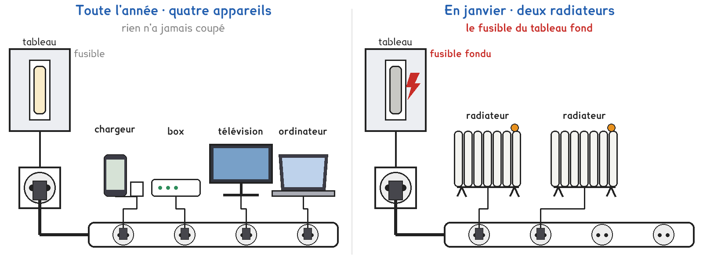
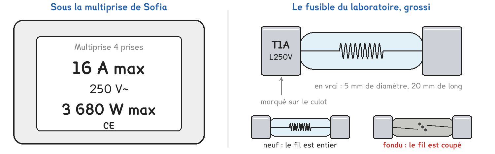
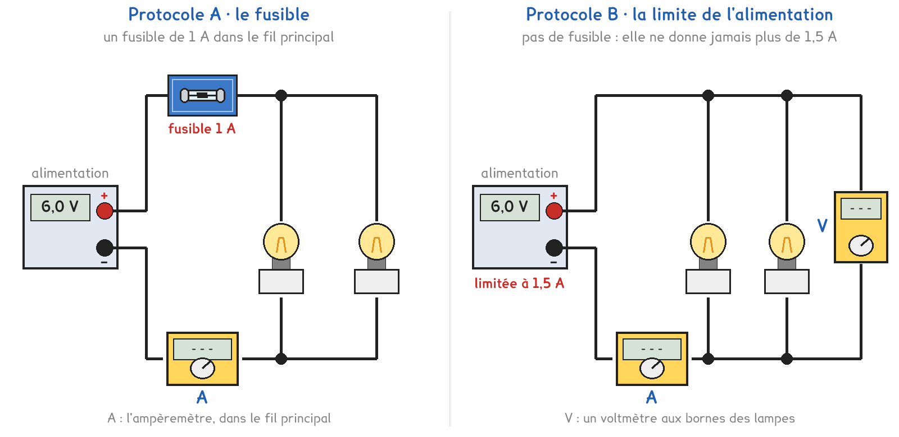
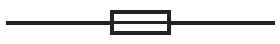

CAP à Tle Bac Pro · toutes spécialités · TP commun CAP-08
Quatre appareils sur la multiprise, rien ne coupe ; deux radiateurs, et le fusible fond. Pourquoi ?
3 figures
Sujet. Sur la multiprise de sa chambre, Sofia branche son chargeur, sa box, sa télévision et son ordinateur : quatre appareils, et rien n’a jamais coupé. En janvier, elle y branche deux radiateurs d’appoint : le fusible du tableau fond.

Problématique : pourquoi deux radiateurs font-ils fondre le fusible, et quatre appareils jamais ?
Au laboratoire, le secteur est remplacé par une alimentation de 6 V, chaque appareil par une lampe, et le fusible du tableau par un fusible de 1 A.
| La lampe, d’après son culot | 6 V · 50 mA | 6 V · 350 mA | 6 V · 1 A |
|---|---|---|---|
| Elle joue | le chargeur | l’ordinateur | un radiateur |
Voici l’étiquette de la multiprise de Sofia et le fusible du laboratoire.

a) Relever ce qui est écrit, puis entourer la grandeur.
| On cherche | Écrit dessus | La grandeur, entourer | Unité, en lettres |
|---|---|---|---|
| courant max | ………… A | tension · intensité · puissance | …………………… |
| puissance max | ………… W | tension · intensité · puissance | …………………… |
| calibre du fusible | ………… A | tension · intensité · puissance | …………………… |
Série · milliampères et ampères. On divise par 1 000 pour passer en ampères, on multiplie par 1 000 pour passer en milliampères. Le premier est fait.
| 50 mA = 0,05 A | 350 mA = …………………… A | 100 mA = …………………… A |
|---|---|---|
| 1 A = …………………… mA | 0,4 A = …………………… mA | 0,05 A = …………………… mA |
Deux protocoles répondent à la même question. Une partie de la classe prend A, l’autre prend B, et on compare à la fin.

Protocole A · le fusible. Un fusible de 1 A est dans le fil principal. On regarde s’il tient ou s’il fond.
Protocole B · la limite de l’alimentation. Pas de fusible : l’alimentation ne donne jamais plus de 1,5 A. Au-delà, sa tension baisse et les lampes faiblissent.
b) Comparer les deux protocoles, puis entourer le vôtre et la raison.
| Protocole A | Protocole B | |
|---|---|---|
| Ce qui protège | le fusible · l’alimentation | le fusible · l’alimentation |
| Ensuite, il faut | changer le fusible · rien | changer le fusible · rien |
Le professeur peut imposer le protocole qui reste libre.
Protocole A · Protocole B, parce que : on veut voir le fusible fondre · on veut pouvoir recommencer
Avant de brancher, on fait une hypothèse.
c) Ce qui fait fondre le fusible, entourer :
le nombre d’appareils branchés · ce que demande chaque appareil
Avant de commencer
L’alimentation est réglée sur 6 V et reste éteinte pendant qu’on branche ou qu’on change une lampe.
L’ampèremètre se branche dans le fil principal : bornes COM et 10 A, sélecteur sur 10 A continu.
La lampe de 1 A et le fusible qui vient de fondre sont très chauds : on ne les touche pas, on attend qu’ils refroidissent, alimentation éteinte.
Le professeur vérifie le montage avant la mise sous tension.
d) Schématiser votre montage avec les symboles normalisés.
Le fusible se dessine ainsi :

Le schéma se dessine sur la feuille du TP.
e) Compléter le tableau pour votre protocole. L’autre colonne se remplit en g.
| L’essai | La somme des culots | I mesurée | A · le fusible | B · les lampes |
|---|---|---|---|---|
| 1 · chargeur et ordinateur, 2 appareils | 0,05 + 0,35 = ………… A | ………… A | tient · fond | normales · faibles |
| 2 · un radiateur, 1 appareil | ………… A | ………… A | tient · fond | normales · faibles |
| 3 · deux radiateurs, 2 appareils | 1 + 1 = ………… A | ………… A | fond après ……… s · tient | normales · faibles |
En B, la tension U aux essais 1, 2 et 3 : ……………… V · ……………… V · ……………… V
f) D’après le tableau e, entourer.
Essais 1 et 2 : la somme des culots et I sont égales · différentes.
La protection a réagi à l’essai n° ……… : la somme y est la plus petite · la plus grande.
Les essais 1 et 3 ont le même nombre · un nombre différent d’appareils.
g) Recopier en e la colonne d’un groupe de l’autre protocole.
L’autre protocole a réagi au même essai : oui · non. Sinon, essai n° ………
Votre hypothèse c est confirmée : oui · non
Série · la multiprise de 16 A. On additionne ce que demandent les appareils de Sofia, sous 230 V, puis on compare à 16 A, le maximum de la multiprise.
| Appareil | chargeur | box | télévision | ordinateur | grille-pain | radiateur | bouilloire |
|---|---|---|---|---|---|---|---|
| Intensité | 0,1 A | 0,1 A | 0,4 A | 0,3 A | 4,3 A | 8,7 A | 9,6 A |
Attention aux unités. Le premier est fait.
| radiateur et bouilloire : 8,7 + 9,6 = 18,3 A : plus | dix chargeurs : 10 × 0,1 = ………… A : plus · moins |
|---|---|
| télévision, box et ordinateur : 0,4 + 0,1 + 0,3 = ………… A : plus · moins | bouilloire et grille-pain : 9,6 + 4,3 = ………… A : plus · moins |
| deux radiateurs : 8,7 + 8,7 = ………… A : plus · moins | radiateur et trois chargeurs : 8,7 A + 300 mA = ………… A : plus · moins |
Le fusible de Sofia a fondu. Son voisin le remplace par un fil de cuivre, et rebranche les deux radiateurs.
h) Entourer ce qui se passe alors.
| Le courant | est coupé · n’est plus jamais coupé |
|---|---|
| Les fils et la multiprise | chauffent · restent froids |
| C’est | sans danger · un risque d’incendie |
Pour finir, on revient à Sofia.
i) Répondre à la problématique en une phrase : pourquoi deux radiateurs font-ils fondre le fusible, et quatre appareils jamais ?
Ce que ce TP a établi, à écrire sous la dictée du professeur :
À RETENIR
À compléter en classe, sur la feuille du TP.
TP commun de physique-chimie, toutes spécialités. Le travail se fait sur la feuille du TP : cette page en est la version à l'écran, sans les lignes à remplir. Rien n'est enregistré.